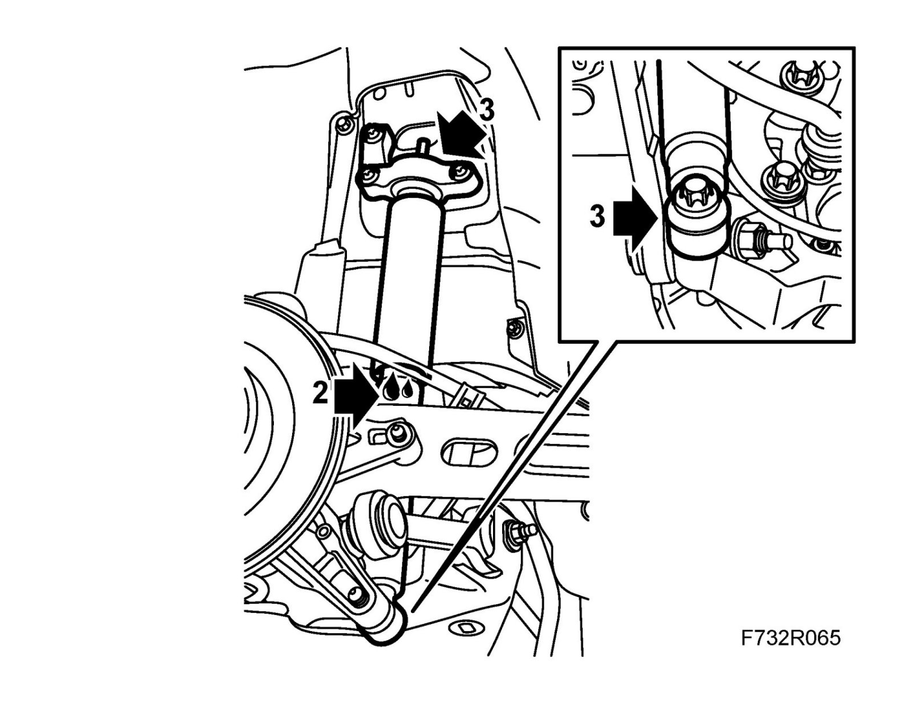
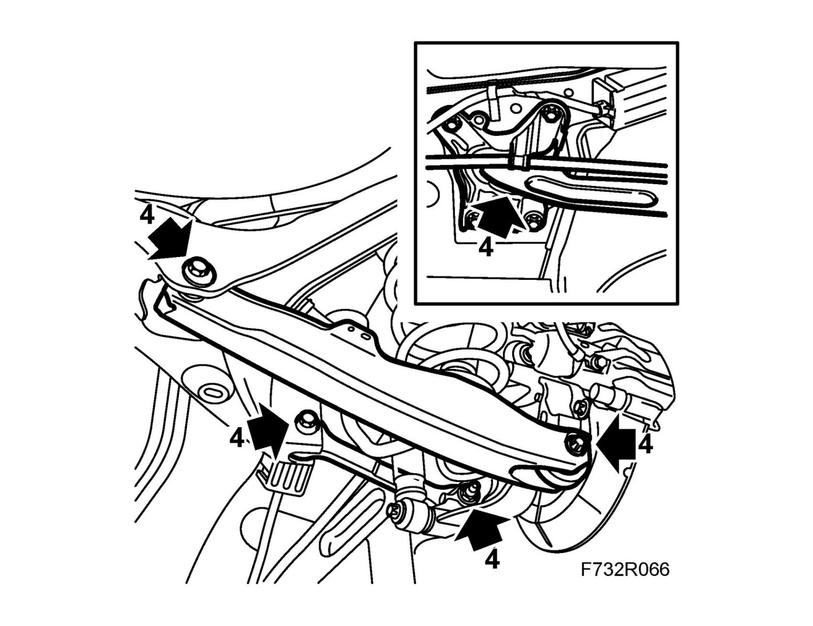
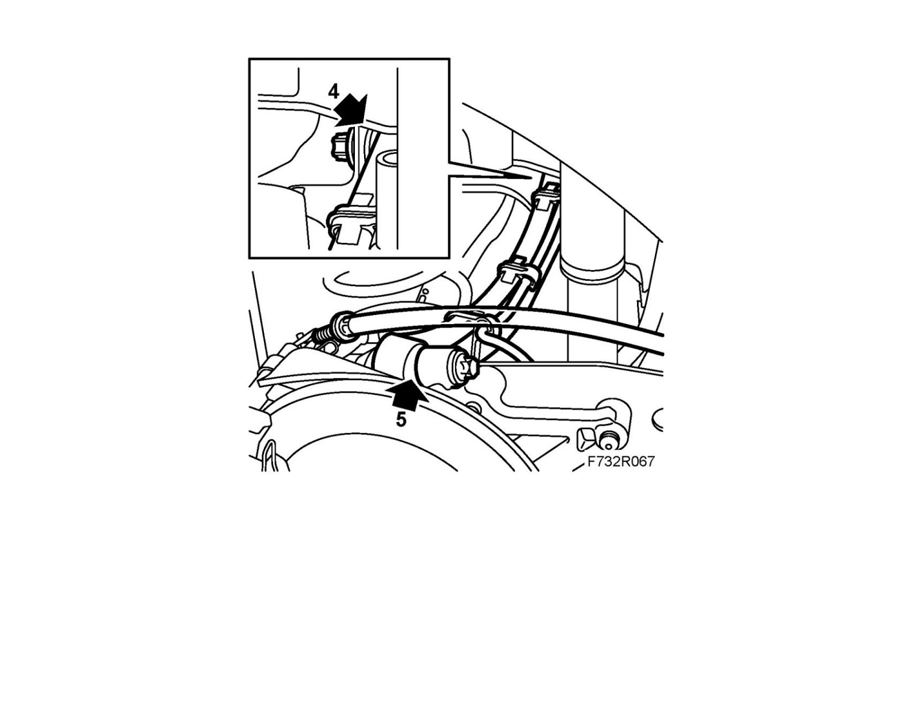
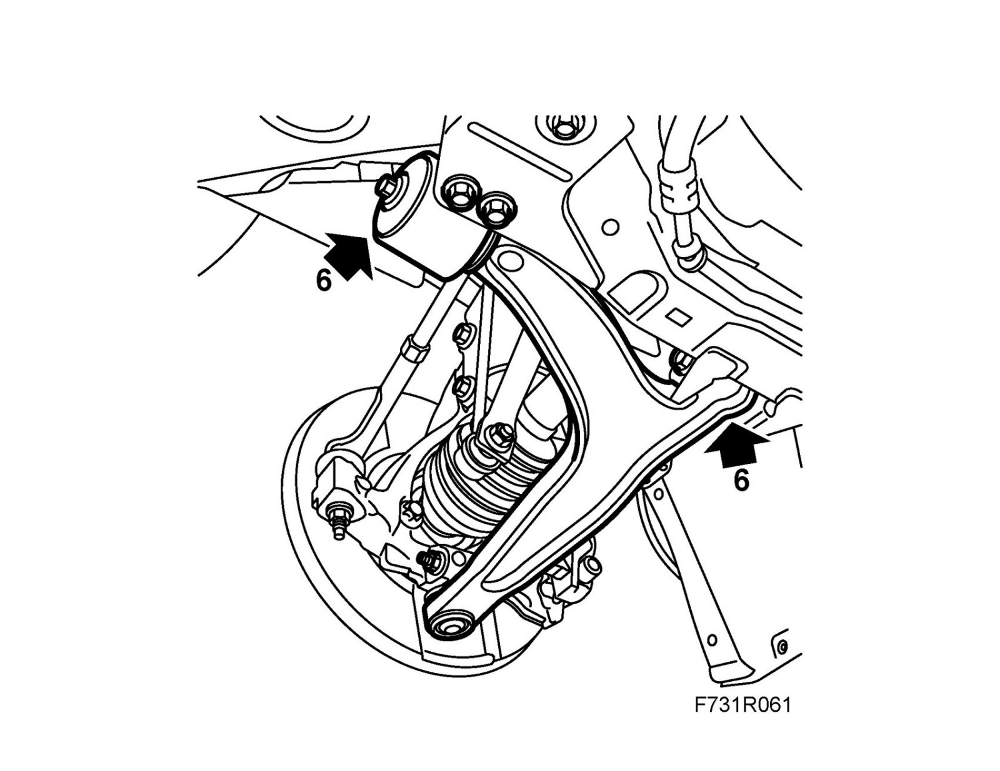
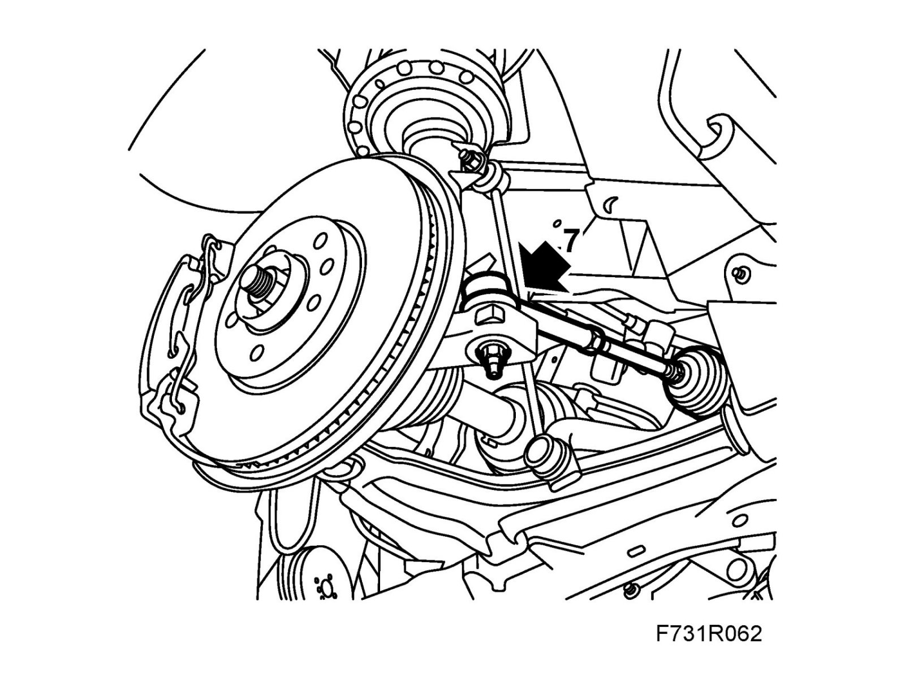

Suspension Strut / Shock Absorber: Testing and Inspection
Dampers and bushes, checkingCheck the front and rear dampers.
1. Take the weight off the rear suspension and lift the steering swivel member one side at a time with a jack while checking the bushes.
2. There should be no oil on the outer damper cylinder.

3. Check the condition of the damper bushes and support bearings.
4. Check the rubber bushes for cracks and other damage in the following locations.

- Lower suspension arm mountings in subframe and steering swivel member.
- Upper suspension arm mounting in subframe.
- Toe link mounting in subframe.
- Longitudinal link mounting in body.
5. Check ball joints for play in the following locations.

- Upper suspension arm mounting in steering swivel member.
- Toe link mounting in steering swivel member.
6. Check the bushes in the suspension arm front and rear mountings on the front subframe for cracks and other damage.

7. Check the ball joints in the suspension arm mounting in the steering swivel member for play.
